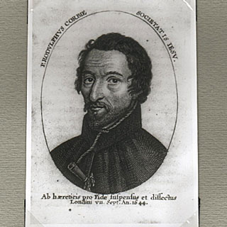
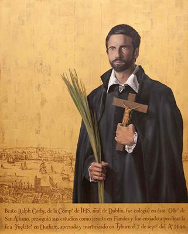
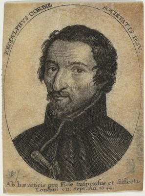

Isusovački blaženici
Svećenik
Bl. Ralf Corby
1598. – 1644.
Isusovački svećenik dvanaest je godina potajno služio katolicima u sjevernoj Engleskoj, sve dok nije uhićen tijekom mise i osuđen zbog svojega svećeništva.
Tekst je preveden i prilagođen uz pomoć umjetne inteligencije.

Izvor slike


Izvor slike


Izvor slike
- Spomendan
- 7. rujna
- Zaštitništvo
- Nije navedeno u izvoru
- Životni vijek
- 1598. – 1644.
- Djelovanje
- Misije i evangelizacija · Progoni i progonstvo · Mučeništvo
- Razdoblje
- 16., 17. stoljeće
- Svećeničko ređenje
- 1625.
- Misija
- Grofovija Durham, Engleska
- Rođenje — dostupni podaci
- 1598.; dan i mjesec nisu potvrđeni u provjerenom izvoru.
- Mjesto rođenja
- Irska
- Datum smrti
- 07.09.1644.
- Mjesto smrti/mučeništva
- Tyburn, London, Engleska
- Okolnosti smrti/mučeništva
- Pogubljen vješanjem i sakaćenjem zbog katoličkoga svećeništva i djelovanja za progona.
- Uloga
- Svećenik
- Mučenik
- Da
- Ostale oznake
- Mučenik engleskih protukatoličkih progona
- Pripadnost
- Isusovac
- Drugi oblici imena
- Ralph Corby · Ralph
Životopis
Ralph Corby rođen je 1598. blizu Dublina, u obitelji engleskih obraćenika koja je zbog vjere mijenjala boravišta. Djetinjstvo je dijelom proveo na sjeveru Engleske, a školovao se u Saint-Omeru, Sevilli i Valladolidu. Nakon svećeničkoga ređenja stupio je u Družbu Isusovu. Oko 1631. poslan je u englesku misiju i dvanaestak godina služio u Durhamu.
Njegova je obitelj dala više redovničkih zvanja. Braća Ambrose i Robert također su postali isusovci, a sestre Mary i Catherine benediktinke. I roditelji su poslije, uz međusoban pristanak, ušli u redovništvo. Taj obiteljski put pripada široj povijesti engleskih katolika koji su se radi školovanja i redovničkoga života oslanjali na zajednice na europskom kontinentu.
Parlamentarni vojnici uhvatili su ga 8. srpnja 1644. u Hamsterleyju, dok je slavio misu. Priznao je da je svećenik. Prevezen je u London i 22. srpnja zatvoren u Newgateu, zajedno s biskupijskim svećenikom Johnom Duckettom. Na suđenju u Old Baileyju 4. rujna obojica su priznala svećeništvo i osuđena na smrt.
Pogubljeni su 7. rujna u Tyburnu. Corbyjevo tijelo i reverenda spaljeni su kako se ne bi čuvale relikvije. Njegov brat Ambrose već je 1645. objavio Certamen Triplex, prikaz mučeništva Ralpha Corbyja, Tome Hollanda i Henrika Morsea. Tako je obiteljska uspomena rano postala i pisano povijesno svjedočanstvo.
Život i nasljeđe
Corbyjeva obitelj više se puta selila između Engleske, Irske i Flandrije, pa njegovo školovanje pripada iskustvu katoličkih obitelji u potrazi za sigurnijim uvjetima. Nakon povratka služio je u području s malo svećenika. Završno uhićenje tijekom mise i potpisano priznanje svećeništva odredili su tijek procesa. Vlasti su nakon pogubljenja nastojale spriječiti prikupljanje relikvija. Taj podatak pokazuje da se borba oko njegova značenja nastavila i nakon smrti, kroz pokušaj nadzora nad uspomenom zajednice.
Tekst je preveden i prilagođen uz pomoć umjetne inteligencije.
Pročitaj više na izvornoj stranici ↗